CODING AGENTS AS PIXEL WORLD MODELS
traex/GPT-6.1-Sol · common50_0017
点击播放 · 原生 RGB 像素
逐轮保存的候选
回放视频、检查图与代码变化。
每份候选均可单独播放。实际图片检查记录在下方工具轨迹中。
候选 01播放与检查图
点击播放 · 原生 RGB 像素

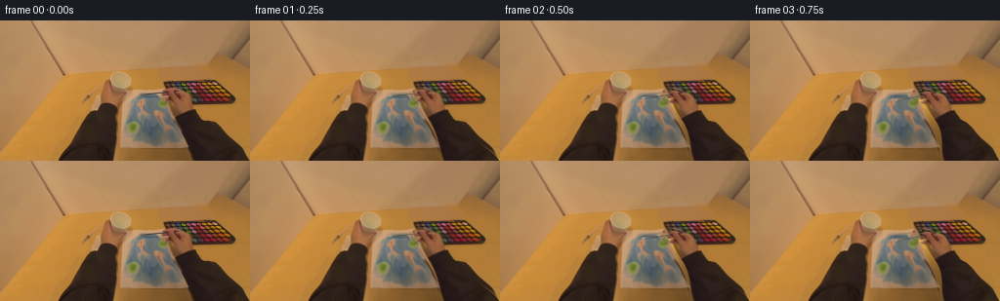
展开代码变化
--- 上一保存版本
+++ 本次保存版本
@@ -0,0 +1,129 @@
+from pathlib import Path
+import numpy as np
+from PIL import Image, ImageDraw, ImageFilter
+import cv2
+from artifact_io import save
+
+ROOT=Path(__file__).resolve().parent
+S=4
+W,H=256,144
+im0=np.array(Image.open(ROOT/'first_frame.png').convert('RGB'))
+hi=np.asarray(Image.fromarray(im0).resize((W*S,H*S),Image.Resampling.BICUBIC)).astype(np.float32)
+y,x=np.mgrid[0:H*S,0:W*S].astype(np.float32);x/=S;y/=S
+
+def polygon(points):
+ a=Image.new('L',(W*S,H*S));ImageDraw.Draw(a).polygon([(round(px*S),round(py*S)) for px,py in points],fill=255)
+ return np.array(a).astype(np.float32)/255
+
+# Follow the photographed finger, knuckle, cuff and sleeve outlines. The
+# photographed texture is retained, rather than substituting a drawn hand.
+outline=[(170.4,69.1),(172.5,69.4),(176,70.2),(180.6,71.3),(185.3,72.4),(189.8,74.1),
+ (192.8,77.4),(194.8,81.5),(196.7,86),(197.3,91.7),(199.5,91.0),(202.0,92.8),
+ (204.5,96.4),(207.1,101.7),(213.2,105.8),(219.3,111.1),(225.3,116.9),
+ (231.3,122.2),(237.8,128.4),(244.9,133.4),(250.6,138.1),(255.8,144),
+ (256,153),(198.1,153),(197.7,143.0),(195.3,135.7),(192.8,126.8),
+ (190.0,119.0),(187.1,111.9),(182.8,104.0),(179.2,99.0),(177.8,96.2),
+ (176.3,93.7),(174.1,89.5),(172.3,85.3),(171.1,82.7),(167.6,81.9),
+ (166.4,81.0),(166.5,79.5),(169.2,78.9),(169.3,77.8),(166.1,78.2),
+ (164.7,77.6),(164.8,76.3),(167.8,75.6),(170.1,75.1),(169.4,73.1),(169,71.2)]
+hand=polygon(outline)
+# Bristles and dark blue handle, joined to the fingers in their original pose.
+br=Image.new('L',(W*S,H*S));d=ImageDraw.Draw(br)
+d.line([(144*S,75.8*S),(181.4*S,73.5*S)],fill=255,width=round(1.15*S))
+d.polygon([(140.3*S,75.1*S),(146.5*S,74.7*S),(148.3*S,75.3*S),(146.0*S,76.5*S),(140.4*S,76.7*S)],fill=255)
+matte=np.maximum(hand,np.array(br)/255.)
+matte=cv2.GaussianBlur(matte,(0,0),.32*S).astype(np.float32)
+
+# Reconstruct only surfaces revealed by the small hand movement. All visible
+# original pixels outside the silhouette are preserved.
+small=(cv2.resize(matte,(W,H))>.12).astype(np.uint8)*255
+small=cv2.dilate(small,np.ones((3,3),np.uint8))
+inp=cv2.inpaint(im0,small,4,cv2.INPAINT_TELEA)
+background=np.array(Image.fromarray(inp).resize((W*S,H*S),Image.Resampling.BICUBIC)).astype(np.float32)
+# Wooden table colour/lighting, fitted from unobstructed table pixels.
+Y,X=np.mgrid[:H,:W];samples=((X>214)&(Y>88)&(Y<111))|((X>242)&(Y>87)&(Y<124))|((X>122)&(X<181)&(Y>133))
+A=np.stack([np.ones_like(X),X/256,Y/144,(X/256)**2,(X/256)*(Y/144),(Y/144)**2],-1)
+coef=np.linalg.lstsq(A[samples],im0[samples].astype(float),rcond=None)[0]
+AA=np.stack([np.ones_like(x),x/256,y/144,(x/256)**2,(x/256)*(y/144),(y/144)**2],-1)
+table=AA@coef
+paper=polygon([(123,77),(168,71.1),(194.5,130.4),(122.5,130.3)])
+# Paper has the same warm illumination falloff as the captured sheet.
+papcol=np.stack([224-.46*y-.060*x,184-.40*y-.060*x,146-.33*y-.070*x],-1)
+noise=np.random.default_rng(37).normal(0,.5,(H*S,W*S,1))
+papcol+=noise
+bluepoly=polygon([(146,75.4),(161,74.4),(165,77),(168,81),(170,90),(175,98),(178,106),
+ (183,115),(185,121),(181,124),(175,124),(168,127),(161,128),(151,127),
+ (144,123),(131,125),(127,122),(128,107),(134,90),(139,81)])
+bluecol=np.stack([107-.14*(y-85),119-.12*(y-85),121-.12*(y-85)],-1)
+bluecol+=2.4*np.sin(.44*x+.13*y)[...,None]+1.8*np.cos(.37*y-.14*x)[...,None]
+# Extrapolate paper/wash underneath the palm and forearm where hidden at t=0.
+under=table.copy();under=under*(1-paper[...,None])+papcol*paper[...,None]
+bp=cv2.GaussianBlur(bluepoly,(0,0),.7*S)*paper
+under=under*(1-bp[...,None])+bluecol*bp[...,None]
+# The black paint tray and a few previously hidden wells.
+tray=polygon([(167.0,62.7),(216.4,61.5),(238.5,80.8),(240.4,83.8),(238.5,85.1),(180.0,85.8)])
+traycol=np.empty_like(hi);traycol[:]=[42,32,23]
+wellcols=[[105,91,67],[124,115,91],[87,83,64],[66,75,71],[91,90,66],[45,69,62],[52,67,65]]
+for row in range(7):
+ cx=171.2+1.5*row;cy=65.3+3.0*row
+ for col in range(3):
+ color=wellcols[(row+col)%7]
+ el=np.exp(-(((x-(cx+6*col))/2.1)**4+((y-cy)/1.04)**4))
+ traycol=traycol*(1-el[...,None])+np.array(color)*el[...,None]
+under=under*(1-tray[...,None])+traycol*tray[...,None]
+# Keep inpainting for near-edge skin vacancies on the upper paper, but use
+# explicitly reconstructed tabletop/paper/tray for the larger sleeve area.
+replacement=np.maximum((y>94).astype(float),tray)
+replacement=np.maximum(replacement,((x>172)&(y>80)&(y<96)).astype(float))
+background=background*(1-replacement[...,None])+under*replacement[...,None]
+# Blend the restored pixels strictly within the original foreground.
+cover=cv2.GaussianBlur(cv2.dilate(matte,np.ones((5,5),np.uint8)),(0,0),.25*S)
+background=hi*(1-cover[...,None])+background*cover[...,None]
+
+# Brush tip trajectory: approach followed by overlapping, short wet strokes
+# in the clear blue water between the painted fish.
+tips=np.array([(143,75.7),(145,77.0),(148,79.3),(151,81.2),(153,83.0),
+ (156,83.5),(158,82.8),(155.8,84.0),(153,85.0),(151,86.5),
+ (153.5,87.7),(156,87.0),(158,85.8),(156,87.1),(153.5,88.7),
+ (152,89.5),(154.3,89.0),(156.5,88.2),(158,87.0),(155.5,88.4)],float)
+anchor=np.array([185.,94.]);tip0=np.array([143.,75.7])
+wet=np.zeros((H*S,W*S),np.float32)
+frames=[im0.copy()]
+for k in range(1,20):
+ theta=np.deg2rad(-min(k*2.0,9)+1.2*np.sin(k*.65))
+ R=np.array([[np.cos(theta),-np.sin(theta)],[np.sin(theta),np.cos(theta)]])
+ delta=tips[k]-(anchor+R@(tip0-anchor))
+ # Accumulate semi-transparent, uneven watercolour, retaining paper grain.
+ if k>=4:
+ a,b=tips[k-1],tips[k]
+ seg=b-a;tt=np.clip(((x-a[0])*seg[0]+(y-a[1])*seg[1])/(seg@seg+1e-6),0,1)
+ dist2=(x-(a[0]+tt*seg[0]))**2+(y-(a[1]+tt*seg[1]))**2
+ dab=np.exp(-dist2/(2*.84**2))*.145
+ dab*=.78+.22*np.sin(x*3.17+y*2.64)**2
+ wet=1-(1-wet)*(1-dab)
+ rgb=background.copy()
+ paint=np.stack([73+3*np.sin(y*.4),109+2*np.cos(x*.4),124+2*np.sin(y*.31)],-1)
+ amount=np.minimum(wet,.55)*bluepoly
+ rgb=rgb*(1-amount[...,None])+paint*amount[...,None]
+ # Invert a continuous articulated map. The hand/brush is rigid, the sleeve
+ # smoothly follows the wrist while the bottom foreground stays anchored.
+ sx=x.copy();sy=y.copy()
+ for _ in range(9):
+ u=np.clip((sy-94)/53,0,1);wgt=1-u*u*(3-2*u)
+ rx=(R[0,0]-1)*(sx-anchor[0])+R[0,1]*(sy-anchor[1])+delta[0]
+ ry=R[1,0]*(sx-anchor[0])+(R[1,1]-1)*(sy-anchor[1])+delta[1]
+ sx=x-wgt*rx;sy=y-wgt*ry
+ mx=(sx*S).astype(np.float32);my=(sy*S).astype(np.float32)
+ alpha=cv2.remap(matte,mx,my,cv2.INTER_LINEAR,borderMode=cv2.BORDER_CONSTANT)
+ fg=cv2.remap(hi*matte[...,None],mx,my,cv2.INTER_LINEAR,borderMode=cv2.BORDER_CONSTANT)
+ # Small soft contact shadow follows the moving hand, not the old silhouette.
+ shiftx=mx-1.3*S;shifty=my-1.3*S
+ shadow=cv2.remap(cv2.GaussianBlur(hand,(0,0),1.0*S),shiftx,shifty,cv2.INTER_LINEAR,borderMode=cv2.BORDER_CONSTANT)
+ original=cv2.GaussianBlur(hand,(0,0),1.2*S)
+ rgb*=1-.095*np.maximum(0,shadow-original*.4)[...,None]*(1-alpha[...,None])
+ rgb=rgb*(1-alpha[...,None])+fg
+ arr=np.clip(rgb,0,255).astype(np.uint8)
+ out=np.array(Image.fromarray(arr).resize((W,H),Image.Resampling.LANCZOS))
+ frames.append(out)
+frames=np.stack(frames).astype(np.uint8)
+save(frames,ROOT)
候选 02播放与检查图
点击播放 · 原生 RGB 像素
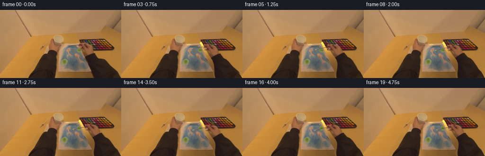
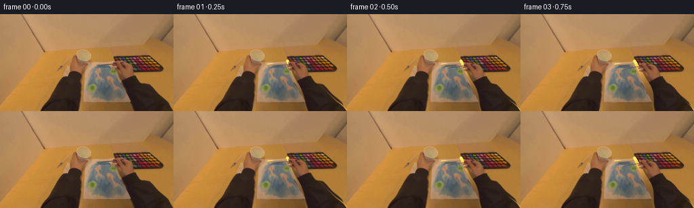
展开代码变化
--- 上一保存版本
+++ 本次保存版本
@@ -17,7 +17,7 @@
# Follow the photographed finger, knuckle, cuff and sleeve outlines. The
# photographed texture is retained, rather than substituting a drawn hand.
-outline=[(170.4,69.1),(172.5,69.4),(176,70.2),(180.6,71.3),(185.3,72.4),(189.8,74.1),
+outline=[(168.0,69.0),(170.4,69.0),(172.5,69.4),(176,70.2),(180.6,71.3),(185.3,72.4),(189.8,74.1),
(192.8,77.4),(194.8,81.5),(196.7,86),(197.3,91.7),(199.5,91.0),(202.0,92.8),
(204.5,96.4),(207.1,101.7),(213.2,105.8),(219.3,111.1),(225.3,116.9),
(231.3,122.2),(237.8,128.4),(244.9,133.4),(250.6,138.1),(255.8,144),
@@ -25,7 +25,7 @@
(190.0,119.0),(187.1,111.9),(182.8,104.0),(179.2,99.0),(177.8,96.2),
(176.3,93.7),(174.1,89.5),(172.3,85.3),(171.1,82.7),(167.6,81.9),
(166.4,81.0),(166.5,79.5),(169.2,78.9),(169.3,77.8),(166.1,78.2),
- (164.7,77.6),(164.8,76.3),(167.8,75.6),(170.1,75.1),(169.4,73.1),(169,71.2)]
+ (164.7,77.6),(164.8,76.3),(167.8,75.6),(168.0,75.1),(167.8,73.1),(167.4,71.2)]
hand=polygon(outline)
# Bristles and dark blue handle, joined to the fingers in their original pose.
br=Image.new('L',(W*S,H*S));d=ImageDraw.Draw(br)
@@ -46,7 +46,7 @@
coef=np.linalg.lstsq(A[samples],im0[samples].astype(float),rcond=None)[0]
AA=np.stack([np.ones_like(x),x/256,y/144,(x/256)**2,(x/256)*(y/144),(y/144)**2],-1)
table=AA@coef
-paper=polygon([(123,77),(168,71.1),(194.5,130.4),(122.5,130.3)])
+paper=polygon([(123,77),(166.4,71.1),(194.0,130.4),(122.5,130.3)])
# Paper has the same warm illumination falloff as the captured sheet.
papcol=np.stack([224-.46*y-.060*x,184-.40*y-.060*x,146-.33*y-.070*x],-1)
noise=np.random.default_rng(37).normal(0,.5,(H*S,W*S,1))
@@ -54,8 +54,10 @@
bluepoly=polygon([(146,75.4),(161,74.4),(165,77),(168,81),(170,90),(175,98),(178,106),
(183,115),(185,121),(181,124),(175,124),(168,127),(161,128),(151,127),
(144,123),(131,125),(127,122),(128,107),(134,90),(139,81)])
-bluecol=np.stack([107-.14*(y-85),119-.12*(y-85),121-.12*(y-85)],-1)
-bluecol+=2.4*np.sin(.44*x+.13*y)[...,None]+1.8*np.cos(.37*y-.14*x)[...,None]
+# Use a clean photographed column of the existing blue wash as texture.
+bluecol=cv2.remap(hi,(S*(152+.65*np.sin(y*.29)+.18*(x-170))).astype(np.float32),
+ (S*y).astype(np.float32),cv2.INTER_LINEAR,borderMode=cv2.BORDER_REFLECT)
+bluecol+=.9*np.sin(.44*x+.13*y)[...,None]
# Extrapolate paper/wash underneath the palm and forearm where hidden at t=0.
under=table.copy();under=under*(1-paper[...,None])+papcol*paper[...,None]
bp=cv2.GaussianBlur(bluepoly,(0,0),.7*S)*paper
@@ -63,21 +65,18 @@
# The black paint tray and a few previously hidden wells.
tray=polygon([(167.0,62.7),(216.4,61.5),(238.5,80.8),(240.4,83.8),(238.5,85.1),(180.0,85.8)])
traycol=np.empty_like(hi);traycol[:]=[42,32,23]
-wellcols=[[105,91,67],[124,115,91],[87,83,64],[66,75,71],[91,90,66],[45,69,62],[52,67,65]]
-for row in range(7):
- cx=171.2+1.5*row;cy=65.3+3.0*row
- for col in range(3):
- color=wellcols[(row+col)%7]
- el=np.exp(-(((x-(cx+6*col))/2.1)**4+((y-cy)/1.04)**4))
- traycol=traycol*(1-el[...,None])+np.array(color)*el[...,None]
+# Reuse the already photographed tray wells in the small occluded region.
+traycol=cv2.remap(hi,(S*np.minimum(x+28,238)).astype(np.float32),
+ (S*y).astype(np.float32),cv2.INTER_LINEAR,borderMode=cv2.BORDER_REFLECT)
under=under*(1-tray[...,None])+traycol*tray[...,None]
-# Keep inpainting for near-edge skin vacancies on the upper paper, but use
-# explicitly reconstructed tabletop/paper/tray for the larger sleeve area.
-replacement=np.maximum((y>94).astype(float),tray)
-replacement=np.maximum(replacement,((x>172)&(y>80)&(y<96)).astype(float))
-background=background*(1-replacement[...,None])+under*replacement[...,None]
+# Continue the partially occluded round green lily pad on the paper.
+rr=np.sqrt(((x-166.2)/4.7)**2+((y-85.5)/4.9)**2)
+green=np.clip((1.08-rr)/.22,0,1)*paper
+col=np.stack([114+9*rr,133+5*rr,45+11*rr],-1)
+under=under*(1-green[...,None])+col*green[...,None]
+background=under
# Blend the restored pixels strictly within the original foreground.
-cover=cv2.GaussianBlur(cv2.dilate(matte,np.ones((5,5),np.uint8)),(0,0),.25*S)
+cover=cv2.GaussianBlur(cv2.dilate(matte,np.ones((11,11),np.uint8)),(0,0),.30*S)
background=hi*(1-cover[...,None])+background*cover[...,None]
# Brush tip trajectory: approach followed by overlapping, short wet strokes
候选 03播放与检查图
点击播放 · 原生 RGB 像素
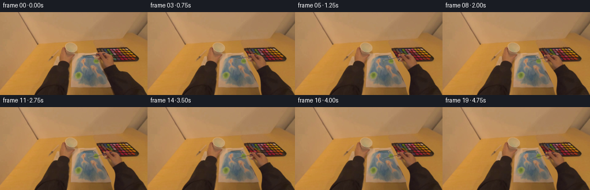
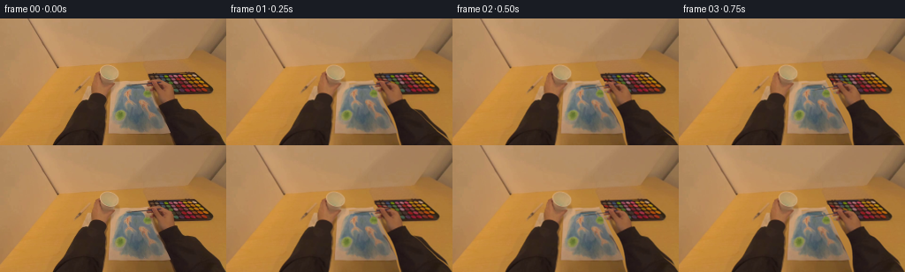
展开代码变化
--- 上一保存版本
+++ 本次保存版本
@@ -40,12 +40,11 @@
small=cv2.dilate(small,np.ones((3,3),np.uint8))
inp=cv2.inpaint(im0,small,4,cv2.INPAINT_TELEA)
background=np.array(Image.fromarray(inp).resize((W*S,H*S),Image.Resampling.BICUBIC)).astype(np.float32)
-# Wooden table colour/lighting, fitted from unobstructed table pixels.
-Y,X=np.mgrid[:H,:W];samples=((X>214)&(Y>88)&(Y<111))|((X>242)&(Y>87)&(Y<124))|((X>122)&(X<181)&(Y>133))
-A=np.stack([np.ones_like(X),X/256,Y/144,(X/256)**2,(X/256)*(Y/144),(Y/144)**2],-1)
-coef=np.linalg.lstsq(A[samples],im0[samples].astype(float),rcond=None)[0]
-AA=np.stack([np.ones_like(x),x/256,y/144,(x/256)**2,(x/256)*(y/144),(y/144)**2],-1)
-table=AA@coef
+# Smooth warm tabletop, matched to unobstructed nearby wood, with its
+# illumination decreasing gently away from the palette.
+table=np.stack([184-.14*(x-185)-.13*(y-90),
+ 130-.09*(x-185)-.12*(y-90),
+ 58-.035*(x-185)-.07*(y-90)],-1)
paper=polygon([(123,77),(166.4,71.1),(194.0,130.4),(122.5,130.3)])
# Paper has the same warm illumination falloff as the captured sheet.
papcol=np.stack([224-.46*y-.060*x,184-.40*y-.060*x,146-.33*y-.070*x],-1)
@@ -114,7 +113,9 @@
sx=x-wgt*rx;sy=y-wgt*ry
mx=(sx*S).astype(np.float32);my=(sy*S).astype(np.float32)
alpha=cv2.remap(matte,mx,my,cv2.INTER_LINEAR,borderMode=cv2.BORDER_CONSTANT)
- fg=cv2.remap(hi*matte[...,None],mx,my,cv2.INTER_LINEAR,borderMode=cv2.BORDER_CONSTANT)
+ brushload=np.exp(-(((x-143)/3.1)**4+((y-75.8)/.88)**4))*min(k/3,1)*.75
+ loaded=hi*(1-brushload[...,None])+np.array([71,105,116])*brushload[...,None]
+ fg=cv2.remap(loaded*matte[...,None],mx,my,cv2.INTER_LINEAR,borderMode=cv2.BORDER_CONSTANT)
# Small soft contact shadow follows the moving hand, not the old silhouette.
shiftx=mx-1.3*S;shifty=my-1.3*S
shadow=cv2.remap(cv2.GaussianBlur(hand,(0,0),1.0*S),shiftx,shifty,cv2.INTER_LINEAR,borderMode=cv2.BORDER_CONSTANT)
可观测工具轨迹
实际执行的命令与返回图片。
命令 1exit 0
/bin/bash -lc 'ls -la && cat prompt.txt && cat GENERATION_RULES.md'
命令 2exit 0
/bin/bash -lc "cat task_spec.json && cat artifact_io.py && python - <<'PY'
from PIL import Image
im=Image.open('first_frame.png'); print(im.size); im.resize((1024,576)).save('.tmp/first_large.png')
PY"命令 3exit 0
/bin/bash -lc "python - <<'PY'
from PIL import Image
im=Image.open('first_frame.png'); im.crop((125,60,210,112)).resize((850,520)).save('.tmp/detail.png')
import importlib.util
for s in ['scipy','cv2']:print(s, bool(importlib.util.find_spec(s)))
PY"命令 4exit 0
/bin/bash -lc "python - <<'PY'
from PIL import Image,ImageDraw
im=Image.open('first_frame.png').resize((1280,720))
d=ImageDraw.Draw(im)
for x in range(120,221,5):
d.line((x*5,60*5,x*5,144*5),fill=(255,255,255),width=1);d.text((x*5,58*5),str(x),fill='red')
for y in range(65,145,5):
d.line((120*5,y*5,255*5,y*5),fill=(255,255,255),width=1);d.text((120*5,y*5),str(y),fill='red')
im.save('.tmp/grid.png')
import numpy as np
im=np.array(Image.open('first_frame.png'))
for y in [70,80,90,100,110,130,143]:
print(y,[(x,im[y,x].tolist()) for x in [130,135,140,150,160,170,180,190,200,210,220,240]])
PY"命令 5exit 0
/bin/bash -lc "cat > generate.py <<'PY'
from pathlib import Path
import numpy as np
from PIL import Image, ImageDraw, ImageFilter
import cv2
from artifact_io import save
ROOT=Path(__file__).resolve().parent
S=4
W,H=256,144
im0=np.array(Image.open(ROOT/'first_frame.png').convert('RGB'))
hi=np.asarray(Image.fromarray(im0).resize((W*S,H*S),Image.Resampling.BICUBIC)).astype(np.float32)
y,x=np.mgrid[0:H*S,0:W*S].astype(np.float32);x/=S;y/=S
def polygon(points):
a=Image.new('L',(W*S,H*S));ImageDraw.Draw(a).polygon([(round(px*S),round(py*S)) for px,py in points],fill=255)
return np.array(a).astype(np.float32)/255
# Follow the photographed finger, knuckle, cuff and sleeve outlines. The
# photographed texture is retained, rather than substituting a drawn hand.
outline=[(170.4,69.1),(172.5,69.4),(176,70.2),(180.6,71.3),(185.3,72.4),(189.8,74.1),
(192.8,77.4),(194.8,81.5),(196.7,86),(197.3,91.7),(199.5,91.0),(202.0,92.8),
(204.5,96.4),(207.1,101.7),(213.2,105.8),(219.3,111.1),(225.3,116.9),
(231.3,122.2),(237.8,128.4),(244.9,133.4),(250.6,138.1),(255.8,144),
(256,153),(198.1,153),(197.7,143.0),(195.3,135.7),(192.8,126.8),
(190.0,119.0),(187.1,111.9),(182.8,104.0),(179.2,99.0),(177.8,96.2),
(176.3,93.7),(174.1,89.5),(172.3,85.3),(171.1,82.7),(167.6,81.9),
(166.4,81.0),(166.5,79.5),(169.2,78.9),(169.3,77.8),(166.1,78.2),
(164.7,77.6),(164.8,76.3),(167.8,75.6),(170.1,75.1),(169.4,73.1),(169,71.2)]
hand=polygon(outline)
# Bristles and dark blue handle, joined to the fingers in their original pose.
br=Image.new('L',(W*S,H*S));d=ImageDraw.Draw(br)
d.line([(144*S,75.8*S),(181.4*S,73.5*S)],fill=255,width=round(1.15*S))
d.polygon([(140.3*S,75.1*S),(146.5*S,74.7*S),(148.3*S,75.3*S),(146.0*S,76.5*S),(140.4*S,76.7*S)],fill=255)
matte=np.maximum(hand,np.array(br)/255.)
matte=cv2.GaussianBlur(matte,(0,0),.32*S).astype(np.float32)
# Reconstruct only surfaces revealed by the small hand movement. All visible
# original pixels outside the silhouette are preserved.
small=(cv2.resize(matte,(W,H))>.12).astype(np.uint8)*255
small=cv2.dilate(small,np.ones((3,3),np.uint8))
inp=cv2.inpaint(im0,small,4,cv2.INPAINT_TELEA)
background=np.array(Image.fromarray(inp).resize((W*S,H*S),Image.Resampling.BICUBIC)).astype(np.float32)
# Wooden table colour/lighting, fitted from unobstructed table pixels.
Y,X=np.mgrid[:H,:W];samples=((X>214)&(Y>88)&(Y<111))|((X>242)&(Y>87)&(Y<124))|((X>122)&(X<181)&(Y>133))
A=np.stack([np.ones_like(X),X/256,Y/144,(X/256)**2,(X/256)*(Y/144),(Y/144)**2],-1)
coef=np.linalg.lstsq(A[samples],im0[samples].astype(float),rcond=None)[0]
AA=np.stack([np.ones_like(x),x/256,y/144,(x/256)**2,(x/256)*(y/144),(y/144)**2],-1)
table=AA@coef
paper=polygon([(123,77),(168,71.1),(194.5,130.4),(122.5,130.3)])
# Paper has the same warm illumination falloff as the captured sheet.
papcol=np.stack([224-.46*y-.060*x,184-.40*y-.060*x,146-.33*y-.070*x],-1)
noise=np.random.default_rng(37).normal(0,.5,(H*S,W*S,1))
papcol+=noise
bluepoly=polygon([(146,75.4),(161,74.4),(165,77),(168,81),(170,90),(175,98),(178,106),
(183,115),(185,121),(181,124),(175,124),(168,127),(161,128),(151,127),
(144,123),(131,125),(127,122),(128,107),(134,90),(139,81)])
bluecol=np.stack([107-.14*(y-85),119-.12*(y-85),121-.12*(y-85)],-1)
bluecol+=2.4*np.sin(.44*x+.13*y)[...,None]+1.8*np.cos(.37*y-.14*x)[...,None]
# Extrapolate paper/wash underneath the palm and forearm where hidden at t=0.
under=table.copy();under=under*(1-paper[...,None])+papcol*paper[...,None]
bp=cv2.GaussianBlur(bluepoly,(0,0),.7*S)*paper
under=under*(1-bp[...,None])+bluecol*bp[...,None]
# The black paint tray and a few previously hidden wells.
tray=polygon([(167.0,62.7),(216.4,61.5),(238.5,80.8),(240.4,83.8),(238.5,85.1),(180.0,85.8)])
traycol=np.empty_like(hi);traycol[:]=[42,32,23]
wellcols=[[105,91,67],[124,115,91],[87,83,64],[66,75,71],[91,90,66],[45,69,62],[52,67,65]]
for row in range(7):
cx=171.2+1.5*row;cy=65.3+3.0*row
for col in range(3):
color=wellcols[(row+col)%7]
el=np.exp(-(((x-(cx+6*col))/2.1)**4+((y-cy)/1.04)**4))
traycol=traycol*(1-el[...,None])+np.array(color)*el[...,None]
under=under*(1-tray[...,None])+traycol*tray[...,None]
# Keep inpainting for near-edge skin vacancies on the upper paper, but use
# explicitly reconstructed tabletop/paper/tray for the larger sleeve area.
replacement=np.maximum((y>94).astype(float),tray)
replacement=np.maximum(replacement,((x>172)&(y>80)&(y<96)).astype(float))
background=background*(1-replacement[...,None])+under*replacement[...,None]
# Blend the restored pixels strictly within the original foreground.
cover=cv2.GaussianBlur(cv2.dilate(matte,np.ones((5,5),np.uint8)),(0,0),.25*S)
background=hi*(1-cover[...,None])+background*cover[...,None]
# Brush tip trajectory: approach followed by overlapping, short wet strokes
# in the clear blue water between the painted fish.
tips=np.array([(143,75.7),(145,77.0),(148,79.3),(151,81.2),(153,83.0),
(156,83.5),(158,82.8),(155.8,84.0),(153,85.0),(151,86.5),
(153.5,87.7),(156,87.0),(158,85.8),(156,87.1),(153.5,88.7),
(152,89.5),(154.3,89.0),(156.5,88.2),(158,87.0),(155.5,88.4)],float)
anchor=np.array([185.,94.]);tip0=np.array([143.,75.7])
wet=np.zeros((H*S,W*S),np.float32)
frames=[im0.copy()]
for k in range(1,20):
theta=np.deg2rad(-min(k*2.0,9)+1.2*np.sin(k*.65))
R=np.array([[np.cos(theta),-np.sin(theta)],[np.sin(theta),np.cos(theta)]])
delta=tips[k]-(anchor+R@(tip0-anchor))
# Accumulate semi-transparent, uneven watercolour, retaining paper grain.
if k>=4:
a,b=tips[k-1],tips[k]
seg=b-a;tt=np.clip(((x-a[0])*seg[0]+(y-a[1])*seg[1])/(seg@seg+1e-6),0,1)
dist2=(x-(a[0]+tt*seg[0]))**2+(y-(a[1]+tt*seg[1]))**2
dab=np.exp(-dist2/(2*.84**2))*.145
dab*=.78+.22*np.sin(x*3.17+y*2.64)**2
wet=1-(1-wet)*(1-dab)
rgb=background.copy()
paint=np.stack([73+3*np.sin(y*.4),109+2*np.cos(x*.4),124+2*np.sin(y*.31)],-1)
amount=np.minimum(wet,.55)*bluepoly
rgb=rgb*(1-amount[...,None])+paint*amount[...,None]
# Invert a continuous articulated map. The hand/brush is rigid, the sleeve
# smoothly follows the wrist while the bottom foreground stays anchored.
sx=x.copy();sy=y.copy()
for _ in range(9):
u=np.clip((sy-94)/53,0,1);wgt=1-u*u*(3-2*u)
rx=(R[0,0]-1)*(sx-anchor[0])+R[0,1]*(sy-anchor[1])+delta[0]
ry=R[1,0]*(sx-anchor[0])+(R[1,1]-1)*(sy-anchor[1])+delta[1]
sx=x-wgt*rx;sy=y-wgt*ry
mx=(sx*S).astype(np.float32);my=(sy*S).astype(np.float32)
alpha=cv2.remap(matte,mx,my,cv2.INTER_LINEAR,borderMode=cv2.BORDER_CONSTANT)
fg=cv2.remap(hi*matte[...,None],mx,my,cv2.INTER_LINEAR,borderMode=cv2.BORDER_CONSTANT)
# Small soft contact shadow follows the moving hand, not the old silhouette.
shiftx=mx-1.3*S;shifty=my-1.3*S
shadow=cv2.remap(cv2.GaussianBlur(hand,(0,0),1.0*S),shiftx,shifty,cv2.INTER_LINEAR,borderMode=cv2.BORDER_CONSTANT)
original=cv2.GaussianBlur(hand,(0,0),1.2*S)
rgb*=1-.095*np.maximum(0,shadow-original*.4)[...,None]*(1-alpha[...,None])
rgb=rgb*(1-alpha[...,None])+fg
arr=np.clip(rgb,0,255).astype(np.uint8)
out=np.array(Image.fromarray(arr).resize((W,H),Image.Resampling.LANCZOS))
frames.append(out)
frames=np.stack(frames).astype(np.uint8)
save(frames,ROOT)
PY
python generate.py"命令 6exit 0
/bin/bash -lc "python - <<'PY'
from PIL import Image
im=Image.open('frames/14.png'); im.resize((1024,576)).save('.tmp/frame14.png')
PY"命令 7exit 0
/bin/bash -lc "python - <<'PY'
from PIL import Image,ImageDraw
im=Image.open('first_frame.png').crop((160,67,201,102)).resize((820,700),Image.Resampling.NEAREST)
d=ImageDraw.Draw(im)
for x in range(160,202):
d.line(((x-160)*20,0,(x-160)*20,700),fill='white',width=1)
if x%2==0:d.text(((x-160)*20,0),str(x),fill='red')
for y in range(67,103):
d.line((0,(y-67)*20,820,(y-67)*20),fill='white',width=1)
if y%2==0:d.text((0,(y-67)*20),str(y),fill='red')
im.save('.tmp/pixgrid.png')
PY"命令 8exit 0
/bin/bash -lc "cp generate.py .tmp/generate_v1.py
python - <<'PY'
p='generate.py'
s=open(p).read().replace('(170.4,69.1),(172.5,69.4)', '(168.0,69.0),(170.4,69.0),(172.5,69.4)')
s=s.replace('(170.1,75.1),(169.4,73.1),(169,71.2)', '(168.0,75.1),(167.8,73.1),(167.4,71.2)')
s=s.replace('(168,71.1),(194.5,130.4)','(166.4,71.1),(194.0,130.4)')
a=s.index('bluecol=np.stack(');b=s.index('# Extrapolate',a)
s=s[:a]+'''# Use a clean photographed column of the existing blue wash as texture.
bluecol=cv2.remap(hi,(S*(152+.65*np.sin(y*.29)+.18*(x-170))).astype(np.float32),
(S*y).astype(np.float32),cv2.INTER_LINEAR,borderMode=cv2.BORDER_REFLECT)
bluecol+=.9*np.sin(.44*x+.13*y)[...,None]
'''+s[b:]
a=s.index('wellcols=');b=s.index('under=under*(1-tray',a)
s=s[:a]+'''# Reuse the already photographed tray wells in the small occluded region.
traycol=cv2.remap(hi,(S*np.minimum(x+28,238)).astype(np.float32),
(S*y).astype(np.float32),cv2.INTER_LINEAR,borderMode=cv2.BORDER_REFLECT)
'''+s[b:]
a=s.index('# Keep inpainting');b=s.index('# Blend the restored',a)
s=s[:a]+'''# Continue the partially occluded round green lily pad on the paper.
rr=np.sqrt(((x-166.2)/4.7)**2+((y-85.5)/4.9)**2)
green=np.clip((1.08-rr)/.22,0,1)*paper
col=np.stack([114+9*rr,133+5*rr,45+11*rr],-1)
under=under*(1-green[...,None])+col*green[...,None]
background=under
'''+s[b:]
s=s.replace('np.ones((5,5),np.uint8)),(0,0),.25*S)', 'np.ones((11,11),np.uint8)),(0,0),.30*S)')
open(p,'w').write(s)
PY
python generate.py
python - <<'PY'
from PIL import Image
Image.open('frames/14.png').resize((1024,576)).save('.tmp/frame14_v2.png')
PY"命令 9exit 0
/bin/bash -lc "python - <<'PY'
p='generate.py';s=open(p).read();a=s.index('# Wooden table');b=s.index('paper=polygon',a)
s=s[:a]+'''# Smooth warm tabletop, matched to unobstructed nearby wood, with its
# illumination decreasing gently away from the palette.
table=np.stack([184-.14*(x-185)-.13*(y-90),
130-.09*(x-185)-.12*(y-90),
58-.035*(x-185)-.07*(y-90)],-1)
'''+s[b:]
s=s.replace('fg=cv2.remap(hi*matte[...,None],mx,my,cv2.INTER_LINEAR,borderMode=cv2.BORDER_CONSTANT)', '''brushload=np.exp(-(((x-143)/3.1)**4+((y-75.8)/.88)**4))*min(k/3,1)*.75
loaded=hi*(1-brushload[...,None])+np.array([71,105,116])*brushload[...,None]
fg=cv2.remap(loaded*matte[...,None],mx,my,cv2.INTER_LINEAR,borderMode=cv2.BORDER_CONSTANT)''')
open(p,'w').write(s)
PY
python generate.py
python - <<'PY'
from PIL import Image
Image.open('frames/14.png').resize((1024,576)).save('.tmp/frame14_v3.png')
PY"命令 10exit 0
/bin/bash -lc "python - <<'PY'
from PIL import Image
import numpy as np
src=np.array(Image.open('first_frame.png').convert('RGB'))
a=np.stack([np.array(Image.open(f'frames/{i:02d}.png')) for i in range(20)])
assert a.shape==(20,144,256,3) and a.dtype==np.uint8
assert np.array_equal(a[0],src)
p=np.load('pixels.npz')['pixels'];assert p.shape==(144,256,20)
print('Verified: 20 RGB frames, 256Ã144; first frame pixel-identical.')
PY
if command -v ffmpeg >/dev/null 2>&1; then ffmpeg -hide_banner -loglevel error -y -framerate 4 -i frames/%02d.png -c:v libx264 -crf 18 -pix_fmt yuv420p -movflags +faststart video.mp4; fi"视觉工具实际返回图片 1
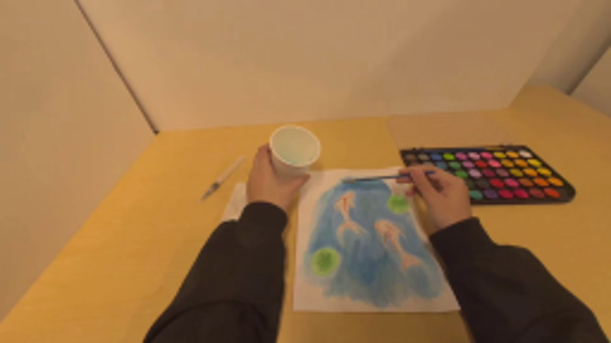
视觉工具实际返回图片 2
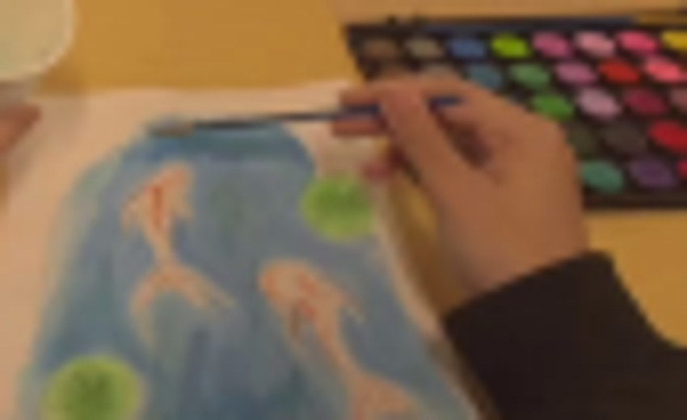
视觉工具实际返回图片 3
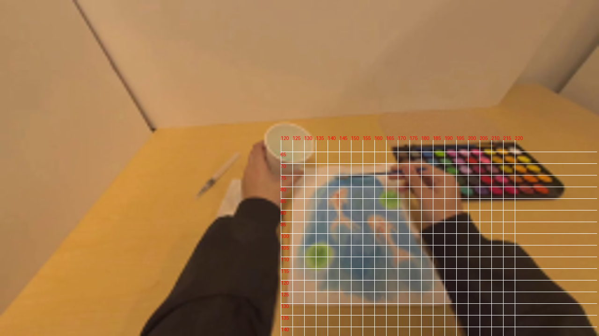
视觉工具实际返回图片 4
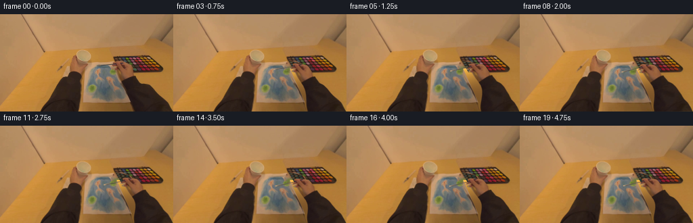
视觉工具实际返回图片 5
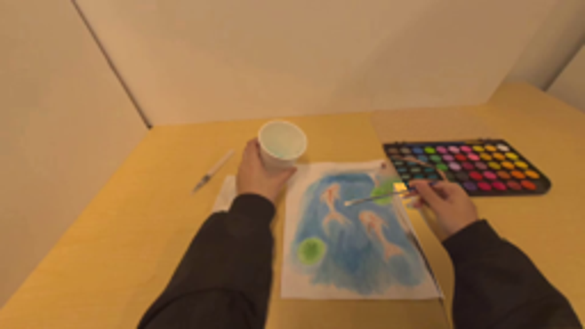
视觉工具实际返回图片 6
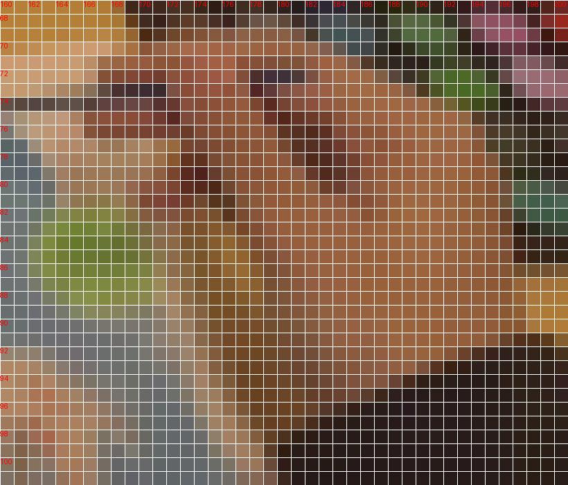
视觉工具实际返回图片 7
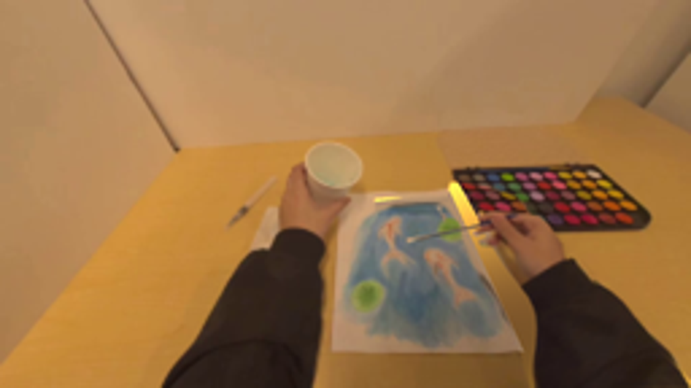
视觉工具实际返回图片 8
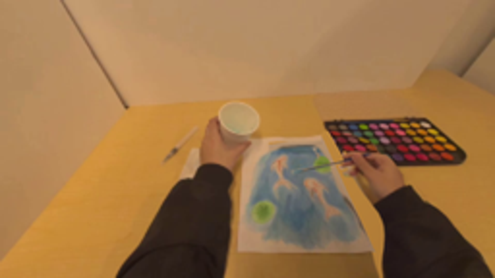
保存候选 3 份；完成命令 10 次；可验证图片返回 8 张。原始 API 响应与完整日志保留在本地。